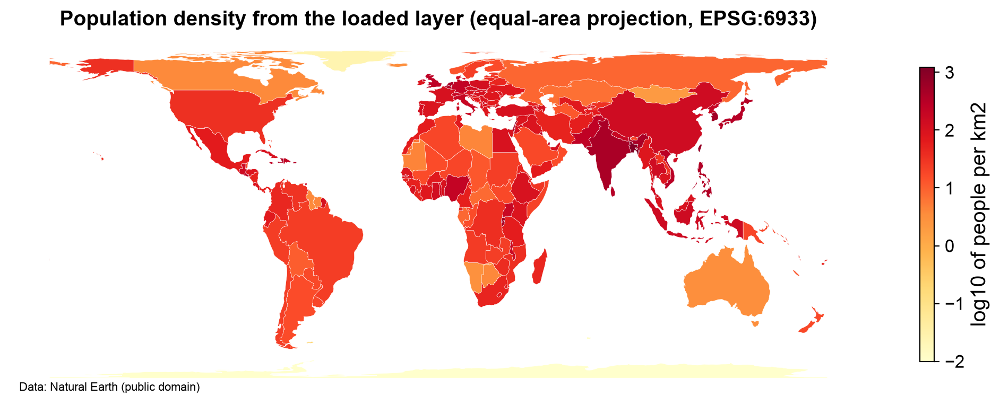

Remark
Please be aware that these lecture notes are accessible online in an ‘early access’ format. They are actively being developed, and certain sections will be further enriched to provide a comprehensive understanding of the subject matter.
3.8. Geospatial ETL, Open Data, and Licensing#
3.8.1. Learning Objectives#
By the end of this section, you should be able to:
Explain why real-world geospatial data is rarely analysis-ready and what “data carpentry” means.
Identify authoritative sources for government, international, and global geospatial data, and evaluate a dataset’s metadata before committing to it.
Explain why spatial data availability does not imply completeness, stability, or unrestricted permission to use it, and distinguish common open-data licenses.
Request only the data needed from a web service, then validate and cache the response and handle rate limits, retries, and changing APIs.
Describe the four phases of a geospatial pipeline (acquire, stage, ingest, render) and how they map to extract, transform, and load.
Verify a pipeline’s output at every boundary using feature counts, CRS, geometry validity, and attribute checks.
Make a pipeline reproducible with explicit transformation records and a processing manifest.
Assess coverage and bias in community-generated and administrative datasets, and preserve attribution and provenance when delivering derived data products.
Section Goal
The formats and databases covered so far are building blocks. This final section of the chapter assembles them into a repeatable pipeline, and treats the governance questions that come with data you did not create (licensing, coverage, and stability) as first-class parts of the workflow. We begin with the problem (why raw data needs work), then cover where to find trustworthy data and what you may do with it, how to structure the journey from download to database, and how to check every step so that mistakes surface early instead of in your final map.
3.8.2. Why Raw Data Is Rarely Analysis-Ready#
Data downloaded from a portal is built for the publisher’s purposes, not for your analysis. Typical differences include:
Different coordinate systems: one layer in degrees, another in a state plane projection.
Different formats: Shapefile, GML, CSV with coordinate columns, GeoJSON, an API response.
Messy attributes: cryptic or truncated field names, inconsistent spellings, wrong data types.
Geometry problems: missing, empty, or invalid geometries; mixed geometry types.
Packaging: zipped archives, multiple files per layer, undocumented fields.
Data carpentry is the practical craft of turning such material into a clean, documented, analysis-ready layer: measure, cut, join, and finish. ETL (Extract, Transform, Load) is the formal name for the same process: extract data from a source, transform it into the shape you need, and load it into its destination.
The central discipline of this section: do not do everything in one step. A one-line script that reads, repairs, reprojects, and loads leaves no place to look when the result is wrong. A pipeline built from separate, inspectable stages lets you see what each stage did, rerun any stage, and explain the result to someone else.
3.8.4. Spatial Data Is Also a Data-Governance Problem#
Being able to download a dataset tells you nothing about three more important questions:
Question |
Concern |
Where it is covered below |
|---|---|---|
May I use it this way? |
Permission |
Licensing |
Can I rely on it staying the same? |
Stability |
Requesting data from web services |
Does it represent the real world? |
Completeness and bias |
Assessing coverage and bias |
A production workflow therefore records, for every external source: the provider, endpoint, query parameters, retrieval time, license, and attribution requirements. The sections that follow show how.
3.8.4.1. Licensing: What “Open” Actually Allows#
“Open data” does not mean “free of conditions.” Every dataset comes with terms, and those terms travel with any layer you derive from it.
License type |
Typical examples |
What it generally requires |
|---|---|---|
Public domain / dedication |
CC0; most works of the US federal government [Cornell Law School, 2026] |
Essentially nothing; attribution is good practice |
Attribution |
CC BY |
Credit the source |
Attribution and share-alike |
CC BY-SA; ODbL (OpenStreetMap) |
Credit the source and release derived databases under the same terms |
Custom or restrictive terms |
Many commercial and some government services |
Whatever the provider specifies: limited uses, no redistribution, no bulk download |
Licenses differ in detail, so always read the actual terms for the dataset you use [Creative Commons, 2009, Creative Commons, 2013, Open Data Commons, 2026]. The table above is a map, not a legal opinion. Its practical consequences:
Attribution must survive into your outputs. A map made from OpenStreetMap data needs the credit “© OpenStreetMap contributors” on the map itself, not just in a notebook.
Share-alike is the license type that most often surprises people. If you combine share-alike data with other layers into a new database, the new database may have to be shared under the same terms.
Combining sources requires checking that licenses are compatible. Two datasets that are each fine on their own may not be freely mixable.
Services have usage policies beyond the data license. Free public servers often limit request volume, forbid heavy bulk use, or require you to identify your application.
The license belongs to the dataset, not the portal. A single portal can host datasets under many different terms. Check each one.
3.8.4.2. Before You Download: A Metadata Checklist#
Metadata is data about the data. Reading it first saves hours of rework. Each question below protects you from a specific kind of failure:
Question |
Why it matters |
|---|---|
What coordinate reference system is it in? |
Wrong or missing CRS puts features in the wrong place or makes measurements meaningless. |
When was it last updated, and how often is it refreshed? |
Determines whether it is current enough, and when to re-run your pipeline. |
What is the spatial resolution (rasters)? |
Sets the smallest feature you can legitimately detect. |
Are there documented quality issues? |
Known gaps or errors should shape your interpretation. |
What license applies, and is attribution required? |
Determines how you may use and publish results. |
What is its lineage, meaning how was it created? |
A dataset digitized from old maps behaves differently from one derived from satellites. |
Are there redistribution restrictions? |
Affects whether you can share your derived layer or the source. |
Store the answers beside the downloaded file (for example in a short README or metadata record). This turns a casual download into a citable, auditable data source [Wilkinson et al., 2016]: anyone, including you six months from now, can see where the data came from and under what terms.
3.8.5. Requesting Data from Web Services#
Many datasets are delivered through web services rather than files. You send an HTTP request to an endpoint with parameters, and receive a response, usually GeoJSON or another structured format. Common service styles include simple REST download endpoints, OGC standards such as WFS (Web Feature Service) and OGC API Features [Open Geospatial Consortium, 2022] for vector data, tile services (WMS/WMTS) for rendered maps, and purpose-built query APIs such as the Overpass API [OpenStreetMap Contributors, 2026] for OpenStreetMap.
3.8.5.1. Request Only What Is Needed#
Never download a country to analyze a neighborhood. Services let you narrow a request:
Mechanism |
What it does |
Example |
|---|---|---|
Bounding box |
Limits results to a rectangle |
|
Date or time filter |
Limits to a period |
Features updated since a date |
Feature type |
Limits to a category |
Only hospitals, only rivers |
Attribute selection |
Returns only chosen fields |
Name and ID, not the full record |
Paging / limits |
Splits large results into pieces |
Request records 1–1000, then 1001–2000 |
Narrow requests reduce transfer time and server load, and they are easier to repeat, since a small, specific query is simpler to document and rerun than a bulk download. Remember coordinate order in a bounding box: longitude (x) comes before latitude (y).
3.8.5.2. Validate and Cache the Response#
A successful-looking response can still be wrong. Before converting it into a layer, check:
Status: did the request succeed (not an error page returned as data)?
Schema: are the expected fields present with the expected types?
CRS: which coordinate system does the response use? (GeoJSON is normally longitude/latitude in WGS 84, but other services vary.)
Feature count: does it match expectations? A count exactly equal to a round number such as 1,000 often means the server truncated the result; ask for the next page.
Then cache the raw response with a timestamp before any processing. You can always reprocess, and you can prove what the service returned on that day. Only keep copies when the license allows it.
3.8.5.3. Do Not Assume an API Is Immutable#
Unlike a downloaded file, a service can change underneath you. Providers may revise historical features, change schemas, impose rate limits, or remove records or even the whole service. Defend against this with engineering habits: keep timestamped raw copies; use retries with backoff (when a request fails for a temporary reason, wait, and wait longer after each repeated failure, rather than hammering the server); respect rate limits and usage policies; keep credentials secret (API keys belong in environment variables or a secret manager, never in shared notebooks); and record the query so it can be repeated exactly.
3.8.6. The Pipeline: Acquire, Stage, Ingest, Render#
A geospatial pipeline can be organized into four phases. They correspond to the classic ETL steps, with one addition at the end:
Phase |
What happens |
ETL step |
Typical output |
|---|---|---|---|
1. Acquire |
Download, extract, and inspect the source; keep the original untouched |
Extract |
Raw files plus a metadata record |
2. Stage |
Clean, repair, restructure, and reproject into a consistent working form |
Transform |
Staged layer in an open format (such as GeoPackage) |
3. Ingest |
Load the staged layer into its final home, usually a spatial database |
Load |
Database table with proper types and indexes |
4. Render |
Map, summarize, and inspect the result |
Verification and use |
Maps, statistics, and checks |
Each phase produces something concrete that can be inspected before the next phase begins. Think of these as contracts between stages: the output of one stage is a guarantee that the next stage can rely on. A tidy directory layout makes the contracts visible:
project/
incoming/ raw downloads, never edited
staged/ cleaned, reprojected layers (e.g., geodata.gpkg)
loaded/ the final database or layers, plus a record of what went into it
manifest/ processing records
Phase 1: Acquire. Download from the identified source and record the URL and date; extract archives (a Shapefile arrives as several files that must stay together); inspect before loading (file names, layers, field names, row counts, a sample of records); and preserve the original, so that if a later step goes wrong you can always start again from the untouched source.
Phase 2: Stage. This is where the carpentry happens: rename and standardize fields; remove or repair bad geometry (repair when you can justify it, drop when you cannot, and in either case count and record what you changed); build geometry from coordinate columns (x is longitude, y is latitude, and the CRS must be declared); reproject to a projected CRS in meters so that distances and areas are meaningful; and write the result to an open, self-contained format. GeoPackage is a good choice for staging: unlike a Shapefile, it is a single file, allows long field names, holds multiple layers, and stores the CRS inside.
Phase 3: Ingest. Place the staged layer into its permanent, queryable home. When that home is a spatial database, the readiness checklist from the Spatial Database Systems section applies: explicit geometry column and type, consistent CRS, handled invalid geometries, normalized mixed geometry types, a stable primary key, and spatial indexes created after loading. If staging was done well, loading is nearly mechanical.
Phase 4: Render. Look at the result. A map is the fastest way to find features displaced by hundreds of kilometers (wrong CRS), a layer that looks stretched (degrees treated as meters), or gaps where data should exist. Treat the first map as a test, not just a deliverable.
3.8.6.1. A Small Pipeline, End to End#
The cells below run all four phases on one public-domain layer, Natural Earth country boundaries, with each phase as a separate function that returns a record of what it did. The first cell is acquire: it downloads the file once (retrying with backoff if the server fails), leaves it untouched in the incoming folder, and records where it came from, when, under which license, and a hash (a fingerprint that changes if even one byte of the file changes).
{
"provider": "Natural Earth",
"url": "https://raw.githubusercontent.com/nvkelso/natural-earth-vector/master/geojson/ne_110m_admin_0_countries.geojson",
"file": "etl_demo/incoming/ne_110m_admin_0_countries.geojson",
"bytes": 838726,
"sha256": "6866c877d39cba9c357620878839b336d569f8c662d3cfab4cb1dbe2d39c977f",
"retrieved_at": "2026-10-19T02:06:58+00:00",
"license": "Public domain (see naturalearthdata.com/about/terms-of-use)"
}
The record fixes which version of the data was used: an 838,726-byte file, retrieved on 19 October 2026 under a public-domain dedication, with a SHA-256 hash beginning 6866c877. If the hash differs on a later run, the input has changed.
The second cell is stage. It reads the raw file, renames and trims the fields, removes missing geometries and repairs invalid ones (recording both), reprojects from degrees to an equal-area projection in meters (EPSG:6933), derives area and population density, and writes the result to a GeoPackage. The country code (ADM0_A3) serves as the stable identifier: unlike a row number, it does not change when rows are filtered or reordered.
{
"features_read": 177,
"source_crs": "EPSG:4326",
"renamed_fields": {
"ADM0_A3": "country_code",
"NAME": "name",
"CONTINENT": "continent",
"POP_EST": "population"
},
"null_or_empty_removed": 0,
"invalid_repaired": [
"United States of America",
"Sudan"
],
"features_written": 177,
"target_crs": "EPSG:6933",
"output": "etl_demo/staged/countries.gpkg, layer 'countries'"
}
The log shows why counting matters. In the version of the file used here, two countries have invalid geometry (self-intersecting boundaries): the United States and Sudan. Had the stage simply dropped invalid features, the pipeline would have removed both from the map without any error, and only the feature count would have revealed it. Repairing them with make_valid kept every feature, and the log records which ones were changed.
The third cell is ingest. A GeoPackage stands in for the database here (the same steps would target PostGIS). It makes the geometry type uniform by promoting Polygon to MultiPolygon, writes the layer, and records how many features it loaded. The fourth cell then checks every boundary by reopening the files from disk and testing them against expectations, rather than trusting the objects still in memory.
{
"features_loaded": 177,
"geometry_types": {
"MultiPolygon": 177
},
"output": "etl_demo/loaded/warehouse.gpkg, layer 'countries'"
}
| after staging | after ingest | |
|---|---|---|
| feature count as expected | pass | pass |
| CRS as expected | pass | pass |
| no null geometries | pass | pass |
| no invalid geometries | pass | pass |
| one geometry type | pass | pass |
| key is unique | pass | pass |
| coordinates look like meters | pass | pass |
| areas are positive | pass | pass |
All eight checks pass at both boundaries: the staged and loaded layers agree on feature count (177), CRS (EPSG:6933), a single geometry type, unique keys, and positive areas. The checks show consistency between stages, and they are only as strong as the expectations behind them; they cannot show that the source data itself is correct.
The last cell is render and the manifest. It maps the loaded layer (population density on a logarithmic scale, with the data credit on the figure itself) and writes the processing manifest: one JSON file that ties the acquisition record, the staging log, the ingest log, and the check results together. With it, the run can be repeated later and compared, and any change in the results can be traced to a change in the inputs or settings.


Fig. 3.26 Population density by country from the loaded layer, on a logarithmic scale in an equal-area projection (EPSG:6933). Data: Natural Earth (public domain).#
The scale in Fig. 3.26 is logarithmic: each step is a factor of ten, so 0 means about one person per km² and 2 means about 100. The highest densities (dark red) fall in South Asia, East Asia, and parts of Europe; the pale areas are Greenland and Antarctica, the latter at the 0.01 floor set in the code. Country averages hide variation inside countries: a desert country with a crowded river valley looks moderately dense everywhere. The density values are derived by this pipeline (population divided by projected area), not supplied by the provider, which is the kind of distinction the responsible-delivery rules below ask you to label.
Manifest written to etl_demo/manifest/run_manifest.json (1894 bytes). Its inputs entry records:
{
"provider": "Natural Earth",
"retrieved_at": "2026-10-19T02:06:58+00:00",
"license": "Public domain (see naturalearthdata.com/about/terms-of-use)"
} and the file hash 6866c877d39cba9c...
3.8.7. Make Transformations Explicit#
An analysis is only reproducible if someone else (or future you) can tell exactly what was done. The manifest above is one way to keep that record. For every source and every transformation, record:
Record |
Example |
|---|---|
Provider and endpoint |
The service, dataset, and download address |
Query parameters |
Area, filters, fields: whatever makes the request repeatable |
Retrieval date and time |
Services change; this fixes “which version” |
License and attribution text |
Governs your use and your outputs |
File hash |
A fingerprint showing the input has not changed |
Source CRS and target CRS |
Original CRS, then EPSG:6933 |
Filters and repairs |
Dropped null and invalid geometries, with counts |
Renamed fields |
|
Output format and location |
|
Response checks |
Status, schema, CRS, and feature count |
Two further practices: prefer a stable identifier over a row number (row numbers change whenever rows are filtered or reordered; a true ID lets you trace any output feature back to its source record), and keep the untouched source, because auditing is impossible if the original no longer exists.
3.8.8. Checks at Every Boundary#
A boundary is any point where data changes hands: after reading, after each transformation, after writing, after loading. Silent errors are the most dangerous, so verify at each boundary. The key habit: reopen the result from disk rather than checking the object in memory, because the file is what the next stage will actually read.
Check |
What it catches |
|---|---|
Feature count and key uniqueness |
Dropped or duplicated records |
CRS and geometry types |
Wrong or lost projection; mixed Polygon/MultiPolygon |
Bounds and coordinate units |
Features in the wrong place; degrees where meters were expected |
Null and invalid geometry counts |
Problems that would break spatial queries later |
Required attributes and data types |
Missing fields, truncated names, numbers stored as text |
The comparison is always against an expectation: counts before and after, and the reasons for any difference. A drop from 12,000 features to 11,950 is fine if you can account for 50 removed invalid geometries; it is a bug if you cannot.
3.8.9. Assessing Coverage and Bias#
Community-generated and administrative datasets are not complete maps of reality. They are records of what someone chose to, or was able to, collect.
Volunteered data follows volunteers. OpenStreetMap is typically richer where there are many contributors: cities, tourist areas, wealthier or more connected regions. Rural areas and regions with fewer contributors can be sparsely mapped [Barrington-Leigh and Millard-Ball, 2017, Haklay, 2010].
Administrative data follows administration. Records depend on the jurisdiction’s budget, standards, and update cycle. Neighboring counties may map the same feature with different detail, or on different schedules.
Attributes are unevenly filled. A road may exist in the data but lack its surface type or speed limit.
Update dates differ across the map, so one layer can mix very recent and very old information.
Check |
What to look for |
|---|---|
Feature density |
Compare features per unit area across regions; sharp, unexplained differences suggest coverage gaps |
Update dates |
Map or tabulate the last-edited date; find stale areas |
Missing attributes |
Rate of empty or default values by region (the tag-completeness chart in the OpenStreetMap Data section is an example) |
Documentation |
Does the provider document known gaps? |
External comparison |
Compare against a reference dataset for a sample area (as the capitals check in the GeoJSON section did) |
The most important interpretive rule: treat the absence of a feature as “not observed,” not as “does not exist,” unless the source documentation explicitly supports reading absence as non-existence. If no hospital appears in an area of a volunteer-built map, that may mean no hospital, or that no one has mapped it. An analysis that treats the second case as the first (for example, calculating travel distance to the “nearest” facility) will systematically misjudge the poorly mapped places, and those are often the places whose residents are least visible already.
3.8.10. Responsible Delivery#
What you publish carries the responsibilities of everything it was built from.
Preserve attribution in derived maps, figures, and exports, as the licenses require.
Separate source facts from your inferences. Values supplied by the provider, and values you computed or estimated (like the density in the pipeline above), should be labeled differently so readers know which to trust.
Document filtering that changes apparent coverage. If you removed records (incomplete rows, areas outside a boundary, features without a certain attribute), say so; the filtered map may look more complete or more empty than the source really is.
State limitations plainly, such as known coverage gaps and the date of retrieval.
Consider privacy and sensitivity. Precise locations of people, homes, or vulnerable sites can cause harm even when each record is public. Check whether the data should be generalized or aggregated before you publish.
A short data note that travels with the deliverable (endpoint, query area, retrieval date, license, and limitations) is the simplest way to do all of this. Before using or delivering a derived dataset, confirm:
the license is identified, and its terms (attribution, share-alike, redistribution) are understood;
licenses of combined sources are compatible;
the endpoint, parameters, and retrieval time are recorded;
the raw response is cached, where allowed, and was validated (status, schema, CRS, count);
rate limits and usage policies are respected;
every pipeline boundary was checked by reopening the output;
coverage and update dates were examined, and absence is treated as “not observed”;
attribution appears in outputs; and
limitations and filtering are documented.
3.8.11. Scaling the Workflow#
Pipelines that work on a small county may fail on a nation. Plan for scale early: read only what you need (select the necessary columns and the geographic extent instead of loading everything); filter early with spatial filters, chunked processing, or database queries before bringing large datasets into memory; and let the database do the heavy lifting, as discussed in the Spatial Database Systems section.
Practice
Convert one legacy Shapefile to a GeoPackage using the pipeline functions above. Compare the schema, CRS, feature count, and bounds before and after conversion, run the boundary checks on both, and record the result in a processing manifest. Then choose one public spatial API, and write a reproducible data note containing its endpoint, query area, retrieval date, license, and two limitations of the result.
For a complete, end-to-end walkthrough of this pipeline — discovering an authoritative source, downloading and extracting an archive, inspecting structure before loading, converting coordinate columns into geometries, and validating the result — see the labs.
3.8.12. Key Terms#
Term |
Meaning |
|---|---|
Data carpentry |
The craft of cleaning and shaping raw data into an analysis-ready form. |
ETL |
Extract, Transform, Load: the standard three-step data pipeline. |
Authoritative source |
A publisher responsible for the data, its documentation, and its maintenance. |
Metadata |
Information describing a dataset: CRS, date, license, lineage, quality. |
Provenance / lineage |
The recorded origin, retrieval, and processing history of data. |
Staging |
An intermediate, cleaned layer between the raw download and the final destination. |
Boundary check |
Verification performed where data passes from one stage to the next. |
Manifest |
A short record of inputs (with hashes), parameters, and outputs for one pipeline run. |
Open data |
Data published under terms that allow reuse, usually with conditions. |
Attribution / share-alike |
Crediting the source as the license requires / releasing derived data under the same terms. |
ODbL |
The Open Database License used by OpenStreetMap. |
Endpoint, bounding box, rate limit |
A service’s web address, a rectangle limiting a request, and a cap on requests over time. |
Backoff |
Waiting progressively longer between retries after failures. |
Volunteered geographic information |
Spatial data contributed by the public, as in OpenStreetMap [Goodchild, 2007]. |
3.8.13. Review Questions#
Why should the raw download never be edited in place?
List three questions from the metadata checklist and the failure each one prevents.
Give an example of data that is easy to download but not permitted for your intended use, and explain why combining two openly licensed datasets can still cause a licensing problem.
A request returns exactly 1,000 features. What might that mean, and what would you do?
Which phase of the pipeline is responsible for reprojection, and which for building spatial indexes?
A staged layer has 50 fewer features than the source. How do you decide whether that is acceptable?
What belongs in a processing manifest, and why include file hashes?
A volunteer-built map shows no clinics in a rural county. What are two possible explanations, and how would you tell them apart?
3.8.14. Summary#
Reliable ETL begins with a trustworthy, well-documented source and proceeds as a sequence of inspectable contracts between stages: acquire the data and preserve the original, stage it into a clean and consistent form, ingest it into its final home, and render it to confirm that it behaves as expected. Open-data and API workflows need both engineering controls (narrow requests, validated and cached responses, retries, recorded queries, boundary checks, manifests) and source literacy (understanding licenses, expecting change, and reading absence as “not observed”). Provenance, licensing, and coverage checks should travel with every derived dataset, the same discipline as the file formats and databases covered earlier in this chapter.
This chapter has covered the full lifecycle of getting geospatial data ready for analysis: recognizing and reading file formats, choosing and converting between them safely, storing and querying data at scale in spatial databases, building auditable ETL pipelines, and sourcing data responsibly from open platforms and APIs. That analysis-ready data is the foundation for the vector analysis techniques covered later in this book.